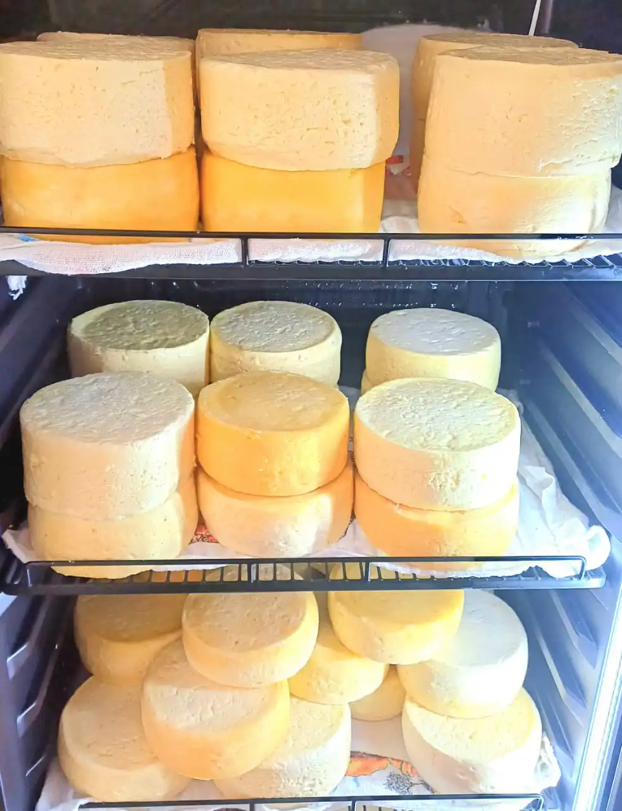
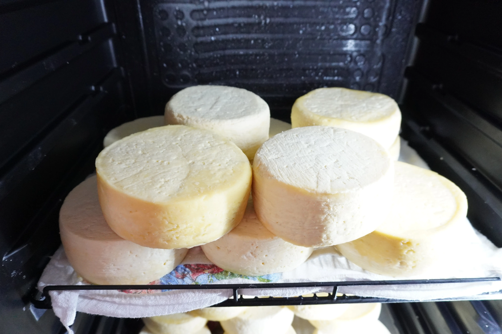
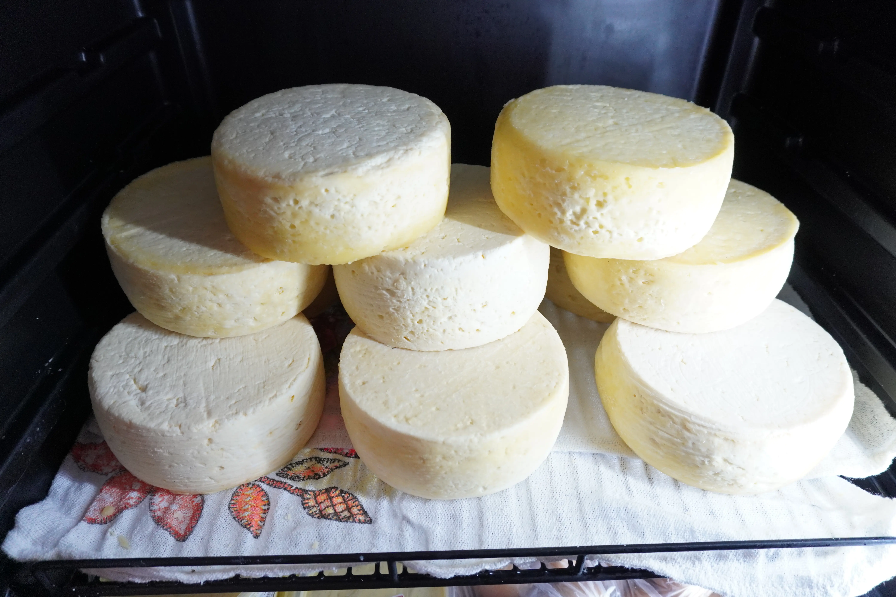

Queijo Artesanal
Produto artesanal de alta qualidade.
Consultar Disponibilidade e EncomendarRetire na loja: R. Bom Jardim, 379 — Centro, Cáceres.
Queijo Artesanal: Do Leite Fresco da Fazenda à Sua Mesa
O queijo artesanal que chega à Peixaria Rio Paraguai percorreu um caminho radicalmente diferente do queijo industrial que preenche as gôndolas dos supermercados. Enquanto o industrial utiliza leite pasteurizado de múltiplas origens, reconstituído e padronizado para uma produção de escala que prioriza uniformidade e prazo de validade longo, o nosso começa com leite fresco tirado pela manhã na fazenda — ainda morno, carregando os aromas naturais do pasto, sem nenhum processo intermediário que comprometa os compostos aromáticos e o sabor genuíno. É essa diferença de origem que torna o queijo artesanal incomparável.
O Processo Artesanal: Coagulação, Prensagem e Cura Natural
A produção começa com a adição do coalho natural ao leite fresco, que provoca a coagulação e a separação do soro. A massa resultante é prensada manualmente em formas, eliminando o excesso de soro e definindo a consistência do queijo. Em seguida, a peça passa pela salga — que além de temperar, inicia a formação da casca protetora — e começa o período de cura natural. Durante a maturação, o queijo desenvolve a textura firme por fora e levemente elástica por dentro, além dos compostos aromáticos que dão ao queijo artesanal aquele sabor que nenhuma fórmula industrial consegue reproduzir. Não há aditivos para acelerar esse processo: apenas tempo e o cuidado de quem entende que bom queijo não pode ser apressado.
Como Apreciar e Harmonizar o Queijo Artesanal Mato-Grossense
Na cultura alimentar do interior de Mato Grosso e do Pantanal, o queijo artesanal ocupa um lugar especial na mesa. Estas são as formas mais apreciadas de consumi-lo:
- No café da tarde com rapadura: A combinação clássica e irresistível do interior — o salgado do queijo contra a doçura rústica da rapadura. Uma refeição em si mesma.
- Com doce de leite: Fatias grossas com colher generosa de doce de leite artesanal — harmonização que toda família mato-grossense conhece de cor.
- Assado na grelha ou frigideira: Fatias mais grossas grelhadas até dourar por fora e derreter levemente por dentro — excelente petisco ou acompanhamento de churrasco.
- Com melado de cana: Queijo fresco regado com melado artesanal — café da manhã de fazenda completo e nutritivo.
- Derretido sobre mandioca cozida: Queijo ralado ou fatiado sobre a mandioca cozida quente — combinação simples e absolutamente saborosa da culinária regional.
Produção Limitada, Qualidade Inegociável
Por ser um produto artesanal de leite fresco, sem conservantes e com produção em pequenos lotes, o queijo tem disponibilidade limitada que acompanha o calendário da fazenda fornecedora. Recomendamos consultar o estoque pelo WhatsApp antes de encomendar, especialmente para quantidades maiores ou datas especiais. Ao comprar nosso queijo artesanal em Cáceres-MT, você apoia diretamente a produção familiar local e leva para casa um produto com identidade, procedência e sabor que nenhuma indústria consegue replicar.